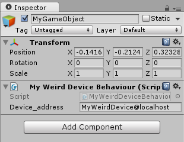

Have you ever wanted to connect that weird device to Unity® but cannot find an easy way?
Me too, so I made a simple to use library so other people don't need to reinvent the wheel.
How does it work?
Vrpn2Unity is a wrapper around Vrpn's C++ code. It gives you a function to poll Vrpn servers, and invokes your C# callbacks when data is available.
It's that simple. Check next how the code looks (there is also a full working example inside of the Unity package).
How does it look?
public class MyWeirdDeviceBehaviour : MonoBehaviour
{
// Vrpn address for the device we want to open.
public string device_address = "MyWeirdDevice@localhost";
// You need to keep track of the DEVICE_ID as it is needed for invoking
// some functions. Negative numbers are invalid and checked inside
// Vrpn2Unity, so it is wise to put here one such values.
private int device_id = -1;
// Used to keep track of the current position of the device.
private static Vector3 last_position;
//**************************************************************************
// Start the VRPN connection through Vrpn2Unity.
//**************************************************************************
void OnEnable()
{
// Open the device for analog updates.
device_id = VRPNController.VrpnStart(device_address,
new VRPNController.AnalogCallback(onWeirdDeviceMove),
null,
null);
}
//**************************************************************************
// Free the VRPN and Vrpn2Unity resources.
//**************************************************************************
void OnDisable()
{
// This is safe, it does nothing if device_id < 0
VRPNController.VrpnOnDestroy(device_id);
device_id = -1;
}
//**************************************************************************
// Update is used to let Vrpn2Unity know it can poll the Vrpn server
// so you control how fast this happens.
//**************************************************************************
void Update ()
{
// Poll new data asynchronous to Vrpn, this data will arrive way after
// this Update has finished.
// This is safe, it does nothing if device_id < 0
VRPNController.VrpnUpdate(device_id);
// Move this GameObject according to the last known position of the
// device
transform.localPosition = last_position;
}
//**************************************************************************
// Analog callback, must be static.
//**************************************************************************
public static void onWeirdDeviceMove(int num_channel, float value)
{
// Analog callbacks are called once per channel (x, y, z in this case).
if (num_channel == 0)
last_position.x = value;
else if (num_channel == 1)
last_position.y = value;
else
last_position.z = value;
}
}
And inside Unity, just attach that script to one of your GameObjects:
